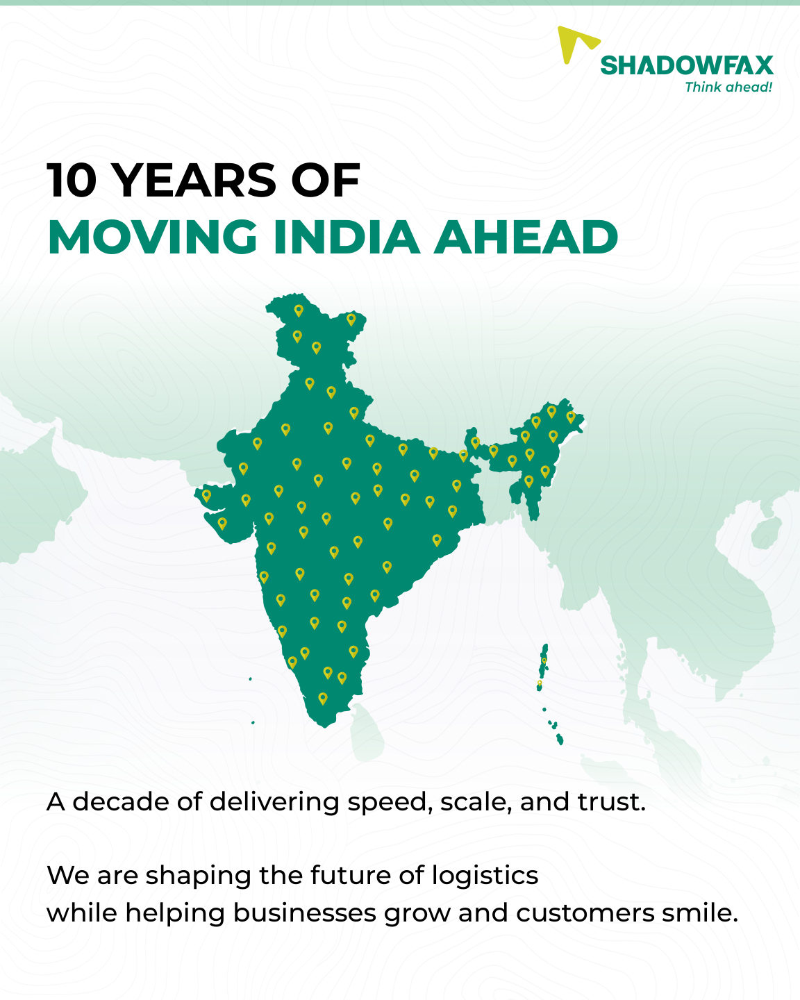

Four frames. One logistics story.
A concise brand-introduction carousel that moves from company scale to everyday deliveries and its decade-long story.
- Context
- Shadowfax
- Project type
- Brand introduction
- Deliverable
- 4-frame carousel
- Communication goal
- Explain scale, service and continuity
Case-study scope: Final sequence + visual rationale. The supplied source files do not specify individual responsibilities, collaborators or asset provenance, so those details are not inferred here.
Brief
The series answers four practical questions in sequence: Who is Shadowfax? What does it do? Why do brands choose it? What does ten years of operations represent? Logistics is made tangible through vehicles, delivery partners and a map of India.
Key decisions
A clean white-and-green layout creates consistency while the photography changes the scale of the story: network infrastructure, doorstep delivery, a rider in motion and India-wide presence.
Scale
The cover introduces reach and operational scale with a freight vehicle, aircraft and packages.
People
A delivery handoff and rider image shift the focus from infrastructure to the customer-facing experience.
Continuity
The final India map and anniversary message present the company’s decade milestone as the close to the introduction.
The full sequence.
Every frame from the supplied design is shown below in reading order. Open any image to view it at full size.

